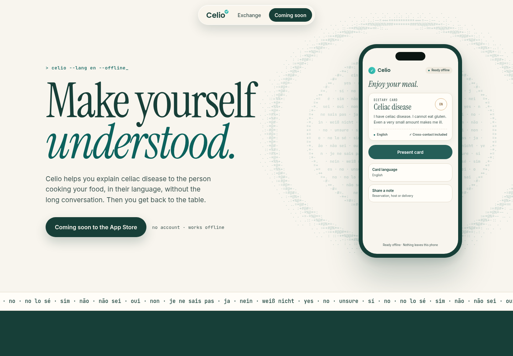

iOS / Accessibility / Human Factors
Celio
An offline iPhone app that helps people with celiac disease explain their dietary needs in another language and get a response from the person preparing their food.

Problem
Explaining celiac disease in another language can be difficult, especially when the person preparing your food is unfamiliar with cross-contact. A translation card can explain what you cannot eat, but it leaves you with another problem: how do you understand the response? I wanted Celio to help with that part of the conversation as well.
Constraints
- Work offline, without an account or a reliable connection.
- Keep the dietary message readable when a phone is handed to someone else.
- Allow the other person to respond in their language.
- Keep the public website focused on explaining the iOS product.
Approach
I interviewed more than 10 people and surveyed over 100 people with celiac disease about their experiences dining while traveling. I built the iOS app in Swift and SwiftUI and used beta feedback to refine it. The main interaction is now a dietary card followed by a two-way exchange in the other person’s language.
Outcome
I moved the project from Django to a native iPhone app, and it’s now in a closed beta with 50+ testers in 3+ countries. I’ve decided not to release it publicly. It deals with a medical condition, I’m not a medical professional, and without clinical review behind it I’m not comfortable putting it on the App Store. The public repository hosts the marketing website, and the original web app is available under the django-web-app-final tag.
Lessons Learned
I spent a great deal of time exploring what Celio could become. I eventually decided to focus on the conversation between the person with celiac disease and the person preparing their food, rather than trying to build an entire travel app. Deciding not to ship it was harder, but it was the right call for something people would rely on at a restaurant table.
Current direction